Since the beginning of the space age, people have sent beyond Earth not only instruments and machines, but also something more personal: an archive of ourselves—of who we are and who we were.

Cultural artifacts and messages sent to outer space